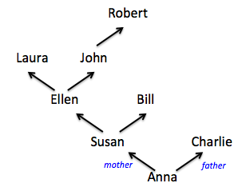

Class Summary: Processing Trees
Copyright (c) 2017 Kathi Fisler
In the previous lecture, we talked about how tables are a poor choice for capturing ancestor trees. Each person must reference two people (its biological parents). In a table, we can only capture references by names, which we then must look up by searching the rows of the table. But if we make our own data, we might be able to capture those connections explicitly.
Here again is the sample ancestor tree that we were trying to capture:

For simplicity, let’s capture just the connections between people (as shown in the diagram), and their eye colors, dropping the birth year from the original example.
1 A datatype for Ancestor Trees
What might such a datatype look like? We at least need a constructor for a person, with info on name, eye color, and parents:
data AncTree: |
| person( |
name :: String, |
eye :: String, |
mother :: ________, |
father :: ________ ) |
end |
The question is what type to use for the mother and father. We could use string and list the names, but that’s back to what we had with the table (when we’d have to look up the people that go with the names). Instead, we want to put a whole person in that spot of the tree. We can’t write person because that isn’t a type name, but we can write AncTree.
data AncTree: |
| person( |
name :: String, |
eye :: String, |
mother :: AncTree, |
father :: AncTree ) |
end |
Now, let’s try building the portion of the tree for John. It would look something like:
person("John", "brown", |
______, |
person("Robert", "green", _____, ______)) |
We have to figure out what goes in the blanks, which correspond to places where we don’t have information about those people.
Should we use empty? While that’s the right spirit, it doesn’t work in practice because empty is a list and our definition says that we need to put an AncTree there.
Instead, we create a second kind of AncTree that corresponds to people for whom we have no information:
data AncTree: |
| person( |
name :: String, |
eye :: String, |
mother :: AncTree, |
father :: AncTree ) |
| unknown |
end |
The unknown option here provides a datum that is an AncTree, but one for which we have no details (since there are no fields/components to those data).
With that, we can finish the definition for John’s portion of the tree.
person("John", "brown", |
unknown, |
person("Robert", "green", unknown, unknown)) |
If we wanted to capture our entire ancestor tree diagram, we could write it as following (using two examples for purposes of illustration – there is no particular reason why we called out John’s part of the tree here):
# two examples of trees |
johnT = |
person("John", "brown", |
unknown, |
person("Robert", "green", unknown, unknown)) |
|
annaT = |
person( |
"Anna", "blue", |
person( |
"Susan", "blue", |
person("Ellen", "brown", |
person("Laura", "blue", unknown, unknown), |
johnT), |
unknown), # note we use johnT here to build annaT |
person("Charlie", "green", unknown, unknown)) |
2 Programs to Process Ancestor Trees
How would we write a function to determine whether anyone in the tree had a particular name? To be clear, we are trying to fill in the following code:
fun in-tree(name :: String, anct :: AncTree) -> Boolean: |
doc: "does given name appear in the tree" |
... |
where: |
in-tree("Robert", johnT) is true |
in-tree("Kathi", johnT) is false |
in-tree("John", unknown) is false |
end |
How do we get started? When we were working on lists, we talked about the template, a skeleton of code that we knew we could write based on the structure of the data. The template names the pieces of each kind of data, and makes recursive calls on pieces that have the same type. Here’s the template over the AncTree filled in:
fun in-tree(name :: String, anct :: AncTree) -> Boolean: |
doc: "does given name appear in the tree" |
cases (AncTree) anct: |
| unknown => ... |
| person(nm, eye, mo, fa) => |
... in-tree(name, mo) ... in-tree(name, fa) |
end |
where: |
in-tree("Robert", johnT) is true |
in-tree("Kathi", johnT) is false |
in-tree("John", unknown) is false |
end |
To finish the code, we need to think about how to fill in the ellipses.
When the tree is unknown, it has no more people, so the answer should be false.
When the tree is a person, there are three possibilities: we could be at a person with the name we’re looking for, or the name could be in the mother’s tree, or the name could be in the father’s tree.
We know how to check whether the person’s name matches the one we are looking for. The recursive calls already ask about the name being in the mother’s tree or father’s tree. We just need to combine those pieces into one Boolean answer. Since there are three possibilities, we should combine them with or
Here’s the final code:
fun in-tree(name :: String, anct :: AncTree) -> Boolean: |
doc: "does given name appear in the tree" |
cases (AncTree) anct: |
| unknown => false |
| person(nm, eye, mo, fa) => |
(nm == name) or in-tree(name, mo) or in-tree(name, fa) |
end |
where: |
in-tree("Robert", johnT) is true |
in-tree("Kathi", johnT) is false |
in-tree("John", unknown) is false |
end |
3 Summarizing How to Approach Tree Problems
We design tree programs using the same design recipe that we covered two weeks ago (Oct 17th in 2018):
Write the datatype for your tree, including a base/leaf case
Write examples of your trees for use in testing
Write the function name, parameters, and types (the fun line)
Write where checks for your code
Write the template, including the cases and recursive calls. Here’s the template again for an ancestor tree, for an arbitrary function called treeF:
fun treeF(name :: String, t :: AncTree) -> Boolean:
cases (AncTree) anct:
| unknown => ...
| person(nm, eye, mo, fa) =>
... treeF(name, mo) ... treeF(name, fa)
end
end
Fill in the template with details specific to the problem
Test your code using your examples
For practice, try problems such as
How many blue-eyed people are in the tree?
How many people are in the tree?
How many generations are in the tree?
How many people have a given name in a tree?
How many people have names starting with "A"?
... and so on